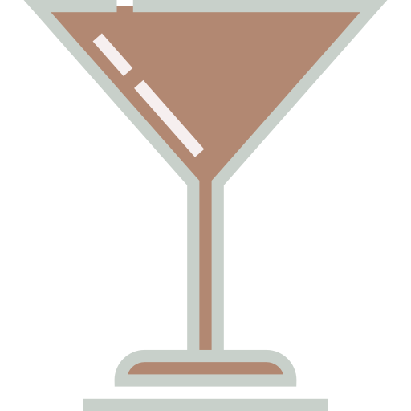
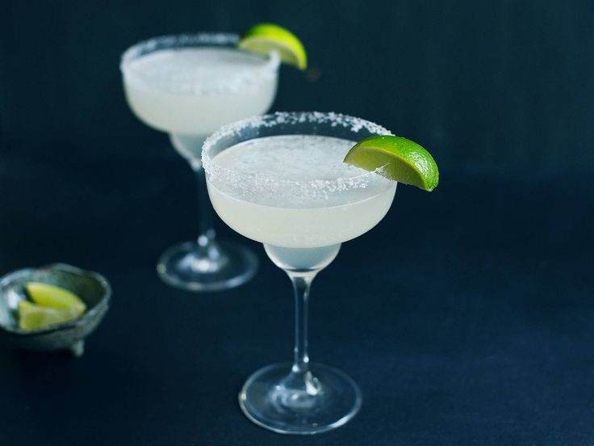
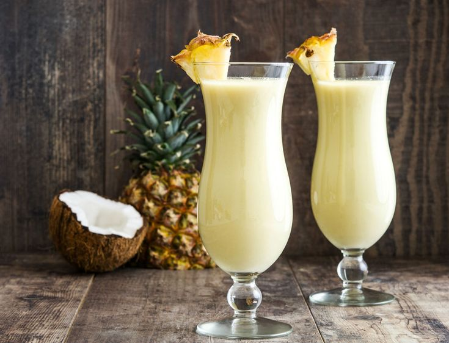

Заказ
Меню
Рецепты
DOMJS
Задача
Партнёрский Бар
Название напитка
Ингредиенты
Рецепт
Изображение
Мохито
Лайм, мята, ром, сахар, содовая, лед
Смотреть рецепт
Маргарита
Текила, ликер трипл-сек, лайм
Смотреть рецепт

Пина Колада
Ром, кокосовое молоко, ананасовый сок
Смотреть рецепт

Как приготовить коктейль "Мохито"
Подготовьте ингредиенты: лайм, мята, сахар, ром, содовая и лед.
Нарежьте лайм на дольки и положите его в стакан.
Добавьте мяту и сахар, затем растолките все вместе.
Заполните стакан льдом и добавьте ром.
Долейте содовой и аккуратно перемешайте.
Украсьте мятой и долькой лайма перед подачей.
Как приготовить коктейль "Маргарита"
Подготовьте ингредиенты: 50 мл текилы, 25 мл ликера трипл-сек, 25 мл сока лайма, лед.
Заполните шейкер льдом.
Добавьте текилу, трипл-сек и сок лайма в шейкер.
Тщательно встряхните шейкер, чтобы смешать все ингредиенты.
Процедите коктейль в охлажденный бокал для маргариты.
Украсьте бокал ободком из соли и долькой лайма перед подачей.
Как приготовить коктейль "Пина Колада"
Подготовьте ингредиенты: 50 мл белого рома, 100 мл ананасового сока, 50 мл кокосового молока, лед.
Заполните блендер льдом.
Добавьте ром, ананасовый сок и кокосовое молоко в блендер.
Смешайте все ингредиенты до однородной кремовой консистенции.
Перелейте коктейль в высокий охлажденный бокал.
Украсьте коктейль ломтиком ананаса и вишенкой перед подачей.